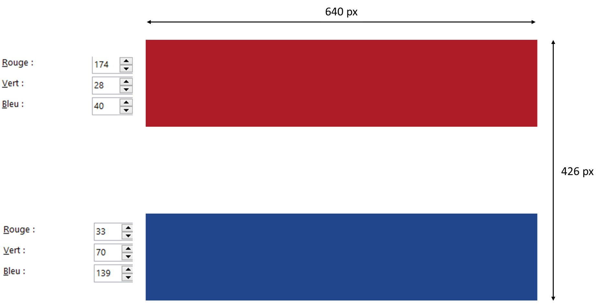
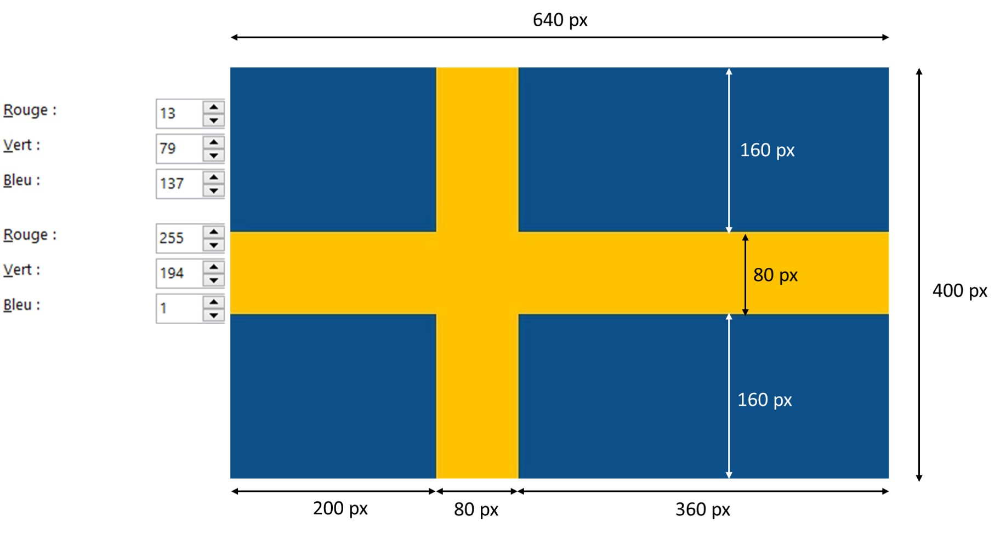
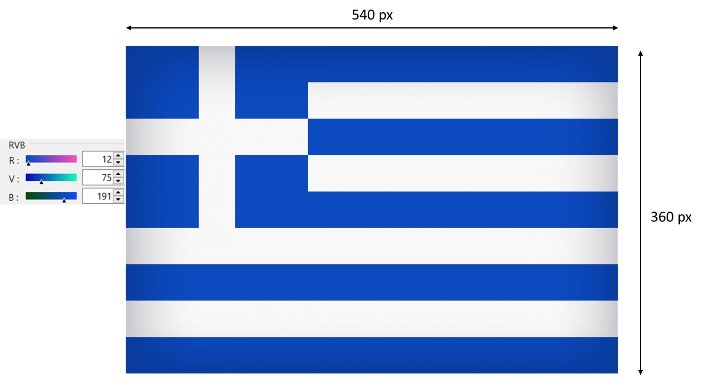
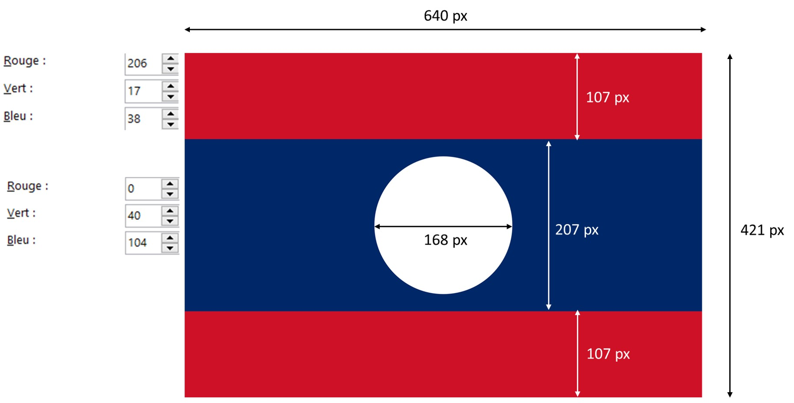

1) Charger le fichier ci-dessous, l'enregistrer dans votre dossier personnel (clic droit et "enregistrer la cible du lien sous") et l'ouvrir à partir de Spyder.
Fichier Python
2) Lire les instructions en vert et essayer de comprendre ce que fera le programme
3) Finir le programme pour créer l'image du drapeau français



Le cercle est centré
